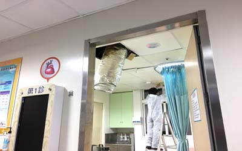
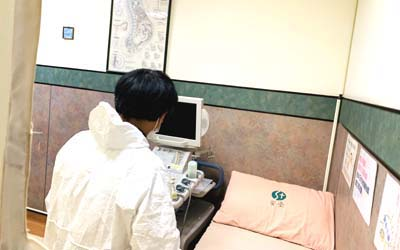
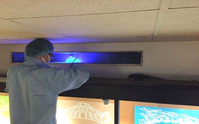

| 空氣及飛沫傳染：病原體可以在空氣中浮游一段時間，經呼吸道進入人體(exp.水痘、麻疹、肺結核)；另一種飛沫則是主要為人的口鼻分泌物、飛沫、在空氣中飛沫或是物體表面接觸到口、鼻傳染，如白喉和流感(含禽流感等)、SARS(嚴重急性呼吸道症候群)、新冠肺炎、肺結核、百日咳、麻疹等。 |
| 糞口傳染：傳播途徑主要是指细菌、病毒、等通過體外污染環境，然後又進入人體消化道系統感染人，如腸疾病、諾羅病毒、痢疾、沙門菌腹瀉...等，這是個人必須養成的良好習慣，這部份傳染大都是經由食材、水的污染，再傳染給人，其中有些是蒼蠅、蟑螂所引起。 |
| 接觸傳染：經直接、間接接觸患者的身體接觸沾有病原體的物件，如共用的衣物毛巾耐藥性金黃葡萄球菌、感染急性結膜炎、疥瘡、香港腳，另一種像是像狂犬病，經狗咬傷抓傷其唾液帶有病毒經傷口感染、或是破傷風...等。 |
| 血液、體液傳染：如AIDS，B型、C型肝炎、淋病...等。 |
| 垂直傳染基本上也是血體液傳染為主，如母親感染至胎兒如梅毒等。 |
| 病媒蚊蟲叮咬：如蚊子引起之登革熱、蜱蟲(壁蝨)攜帶新布尼亞病毒引起發熱伴血小板減少綜合症（SFTS）。 |
| 上述在於細菌病菌之(致病)數量，及被感染宿主之抵抗力，都會有不同之結果，其數量與生存環境有關，包含水分、養分、溫度...為主要條件。 |

| 1.自然界中空氣：已知超過70%的傳染病可經由空氣途徑傳播，即通過微生物污染的空氣進而引起最終致病，尤其空氣中有須多微小粉塵更是細菌附著之處。 |
| 2.食品：除了不潔之食物外，還有許多霉菌所產生之致命毒素，如黃曲霉毒素，它的來源是花生、玉米、大米...等，因高溫高濕從霉變的食品所產生的毒素(詳見食品清潔衛生管理)，另外像是沙門氏菌來源為不衛生的食品。 |
| 3.動物：動物有許多人畜會感染的細菌病毒，近期大家比較熟知的是造成全球多人死亡的禽流感病毒，及病毒變種可傳染人的豬流感，以及老鼠、蝙蝠所傳播之細菌病毒，2020年造成亞洲色變武漢肺炎冠狀病毒。 |
| 4.他人接觸：接觸到病人之排瀉、嘔吐物或是體液...等，或是以飛沫流感感染為主，其中抵抗力越弱之老人兒童或病人最容易被傳染，因此體弱之人，在醫院及人潮眾多處，帶口罩及常洗手是避免感染方法之一，只要嚴格的遵守個人和食品衛生習慣：勤洗手，特別是在接觸病患前後、如廁後、進食或者準備食物之前就會降低感染機率。 |
| 5.土壤、地表冰層：原本就存在地球之病毒，經媒介傳染給人類。 |
| 6.植物：因人類破壞森林開發而帶出對人類有危害之菌類。 |
| 7.水：不潔淨之水是最常見引起危害源頭之主因，最好是飲用經過濾或經煮沸之開水，得注意年久未用之水管是細菌藏納之處。 |
| 8.昆蟲：如蟑螂、蒼蠅、蚊子可傳染之疾病不勝枚舉。 |
| 9.自身：我們身上有許多細菌，在人體健康並不會造成問題，但若自身抵抗力差就會引起病情，另外一些病毒帶原者身上這種情況更為嚴重。 |

| 細菌消毒必需先了解到細菌來源處，便可做初部的診斷，了解源頭為何物，才能對症下藥，其主要概念是--消毒是對環境和物品消毒，而非對人體做消毒，人體是以個人衛生為主，常洗手，環境整理為先。 |
切斷或控制傳染途徑，為最有效方式，根據不同場所，有不同之調整工(方)法及設備，並且控制生長環境，讓微生物病菌之環境不利於細菌繁殖或是存活。 |
| 以空氣傳染及飛沫傳染，空氣傳染的能力會比飛沫強，飛沫大都會在一公尺左右，但有時因為各種條件許可有利下，它也有可能滯留時間會長一些或遠一些。 |
| 上述感染防治，有些是醫護人員職責，其它部份就為專業消毒人員職責，了解其途境後，就依不同途境病源題出防治方法，首先預防消毒是優於治理消毒，從源頭管制，設多層防道方法，讓感染機會降低，如發生感染時，其控制就會簡單很多。 |
| 個人衛生最為重要，正確洗手比用酒精噴手消毒來的有效，這部份我司親自實驗過近百次：找不同的人、用兩種方式洗手，結果都是用肥皂洗手優於酒精乾洗手。 |
| 一個健康人得病所需要的致病微生物細菌病毒數量和它的毒力和致病機制有關，抵抗力差的人，像老人、小孩、有慢性病的人，也會比較容易被感染。 |
| 簡易細菌消毒方式步驟為先戴上口罩及拋棄式手套，將市用漂白水稀釋成0.5%(5000ppm)，將其噴撒在污染源上並以拋棄式紙巾清除，再重覆上述動作由外清理到內區域二次，待乾燥後使用70%酒精擦拭即可。 |